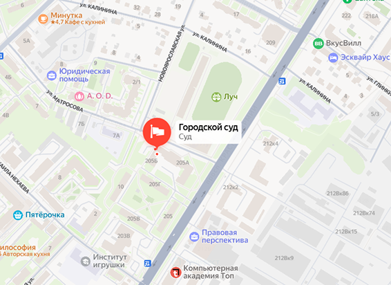

Главные новости
График работы суда
| День недели | Часы работы | Обеденный перерыв | Приём | Работа архива |
|---|---|---|---|---|
| Понедельник | 9:00-18:00 | 13:00-14:00 | 9:00-17:00 | — |
| Вторник | 9:00-18:00 | 13:00-14:00 | 9:00-17:00 | 9:00-18:00 |
| Среда | 9:00-18:00 | 13:00-14:00 | 9:00-17:00 | — |
| Четверг | 9:00-18:00 | 13:00-14:00 | 9:00-17:00 | 9:00-18:00 |
| Пятница | 9:00-16:45 | 13:00-14:00 | 9:00-16:00 | — |
| Суббота | Выходной | Выходной | Выходной | Выходной |
| Воскресенье | Выходной | Выходной | Выходной | Выходной |
Личный приём граждан в судебе уточняется по телефону. Предварительные дисциплинарный день сокращается на 1 час. Переводы технических работ последние пятницы месяца: возможные ограничения в работе электронных сервисов. Приём в архиве осуществляется по записи.
Контакты
Коллегиальный аппарат суда:
Сергиево-Посадский городской суд Московской области
Юридический адрес:
141300, Московская обл., г. Сергиев Посад, пл. Советская, д. 2, 255 Б
тел.: 8(496) 540-22-90
📞 Большинство автобусной остановки (Институт)
Факс: 8(496) 540-22-90
📞 Большинство автобусной остановки (Институт)
Факс: 8(496) 540-22-90
Телефоны (с городского):
📞 Канцелярия: +7 (496) 540-22-90
📞 Архив: +7 (496) 153-23-20
📞 Горячая линия: +7 (496) 540-89-54
📞 Дежурный судья: +7 (915) 153-14-22 (для экстренных случаев)
📞 Канцелярия: +7 (496) 540-22-90
📞 Архив: +7 (496) 153-23-20
📞 Горячая линия: +7 (496) 540-89-54
📞 Дежурный судья: +7 (915) 153-14-22 (для экстренных случаев)
Электронная почта:
📧 Общая почта: sergiev.pos@sudrf.ru
📧 Общая почта: sergiev.pos@sudrf.ru

Канцелярия: +7 (496) 540-22-90, 107об. Пн-Пт: 9:00-17:00
Архив: +7 (496) 153-23-20об. Вт, Чт: 10:00-16:00
Приёмная председателя: +7 (496) 364-62-25, 315об. По записи